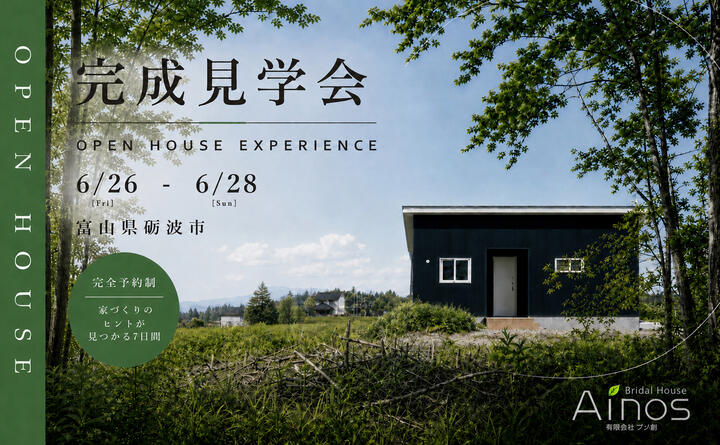

イベント情報
砺波市・自然素材の平屋
完成見学会
この見学会は終了しました
詳しいご案内
日程・価格・募集内容などは、掲載当時の情報です。
砺波市・1LDKの平屋
天然素材の家を、
五感で体感する。
このたび、お施主様のご厚意により、完成したばかりの住まいを期間限定で一般公開いたします。天然素材の心地よさを、ぜひ五感でご体感ください。
漆喰の白壁が生み出す柔らかな光、無垢材の温かみある香り。住まいとはただの空間ではなく、家族の時間が宿る場所です。
開催情報を見るこの見学会は終了しました
2026年6月26日（金）
〜6月28日（日）
- 開催時間
- 09:00〜18:00
最終受付 18:00 - 会場
- 富山県砺波市
ご予約後に住所をご案内 - 参加費・予約
- 無料・完全予約制
- 送迎
- 無料送迎あり
掲載当時の開催情報です。今後の見学会・オンライン見学についてはお問い合わせください。
今後の見学について相談する今回の住まい
平屋・1LDK。
素材と性能にこだわる。
全面漆喰塗り壁 ／ 無垢杉フローリング
高気密・高断熱 ／ 耐震等級3相当
全面漆喰の壁
調湿・消臭・抗菌効果に優れた漆喰を全面に使用。一年中快適な室内環境を実現。
無垢材の温もり
杉の無垢フローリングは素足で歩くと心地よく、お子様も安心して遊べます。
耐震等級3相当
最高等級の耐震性能で大切な家族を守ります。富山の気候に最適な構造設計。
送迎から個別相談まで
当日の流れ
お迎え
スタッフがご自宅まで直接お迎えにあがります。
受付
到着後、受付をお済ませください。手袋・スリッパをご用意。
自由見学
漆喰の壁・無垢材の香りをじっくり体感。写真撮影もOK。
スタッフ説明
素材・間取り・仕様の詳細をスタッフがご説明します。
個別相談
資金計画・土地探しなど、何でもご相談ください（任意）。
ご来場が難しい方へ
スマホ一台で、
オンライン見学。
ご都合が合わない方のために、Zoomオンライン見学会も開催しています。スマホ一台で、スタッフが各部屋をリアルタイムでご案内します。
間取り・素材・費用など、その場で気軽にご質問ください。
- 所要時間
- 約30〜45分
- 参加費
- 無料
- スマートフォン・タブレット・PCで参加可能（Zoomアプリ推奨）
- ご都合の良い日時をご相談ください
- フォーム・お電話・LINEにて「オンライン見学希望」とお伝えください
ご来場にあたってのお願い
- 完全予約制です。事前にお電話・フォーム・LINEよりご予約ください。
- スタッフがお迎えにあがりますので、道順の心配は不要です。
- お施主様のお住まいのため、室内の取り扱いにご配慮をお願いします。
- 小さなお子様連れでも大丈夫です。キッズスペースをご用意しています。
- ご来場が難しい方は、Zoomオンライン見学をご利用ください。
受付時間 9:00〜18:00（無料電話）
0800-200-2661